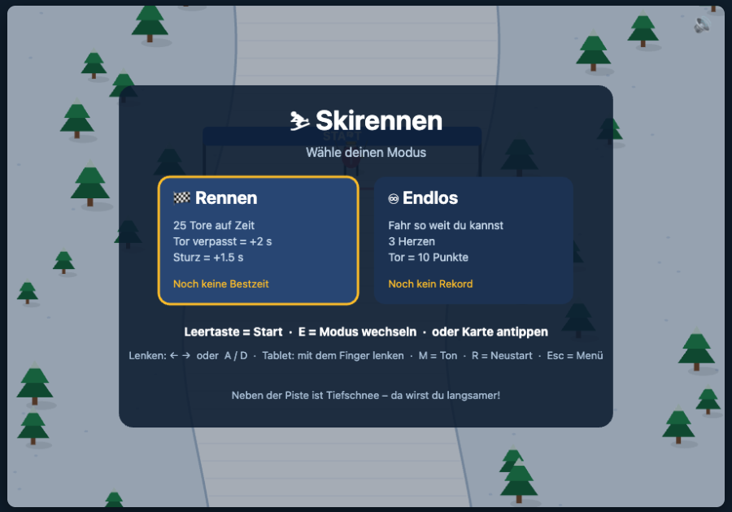
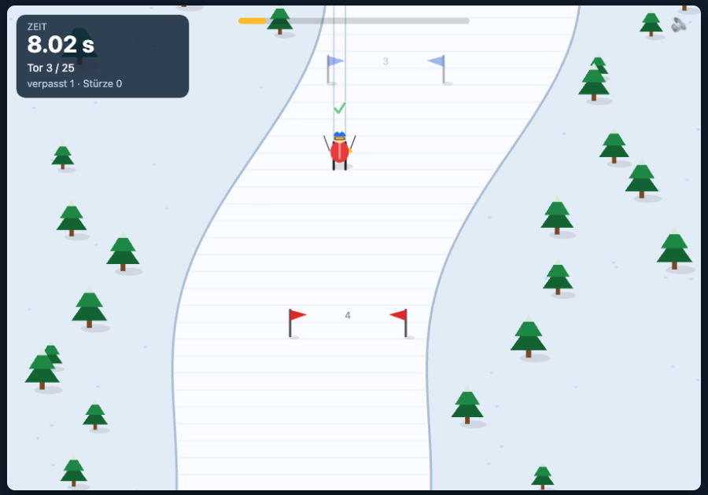
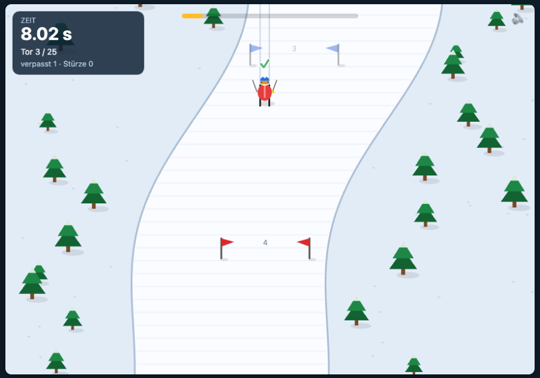
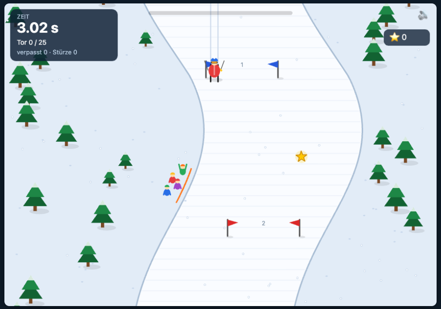
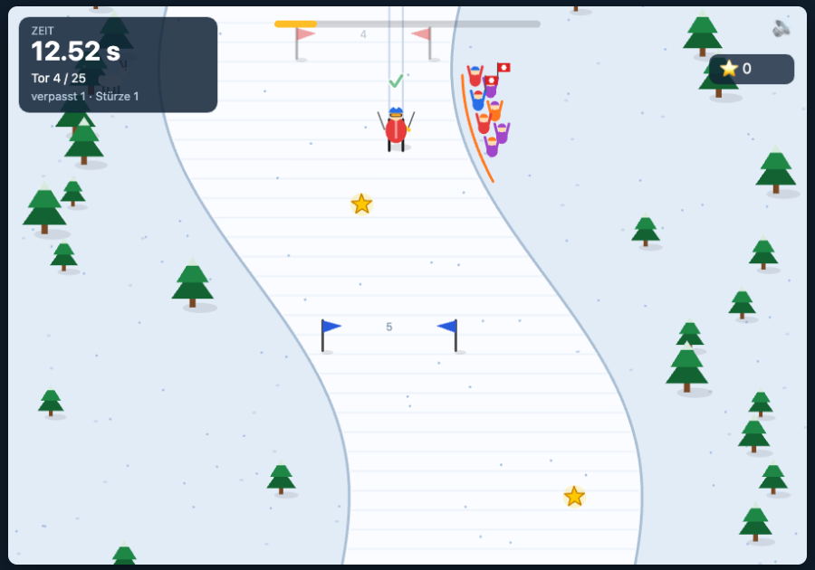
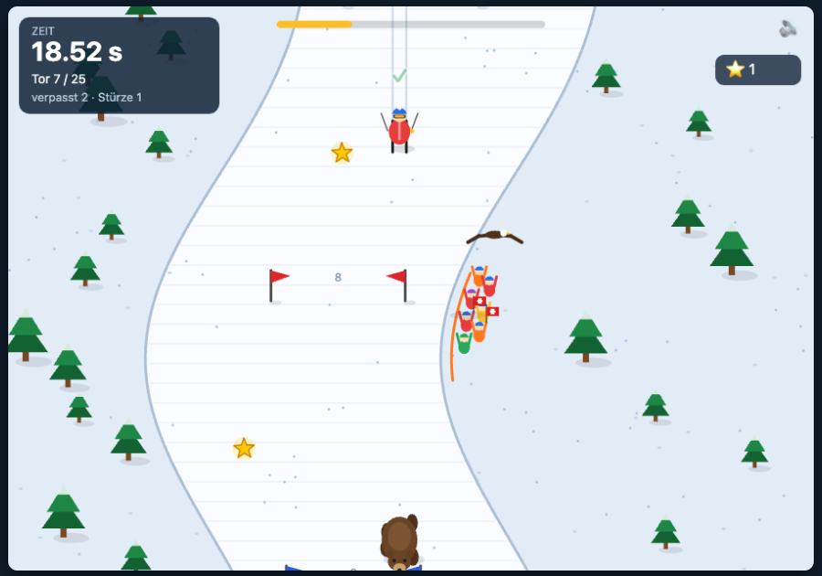
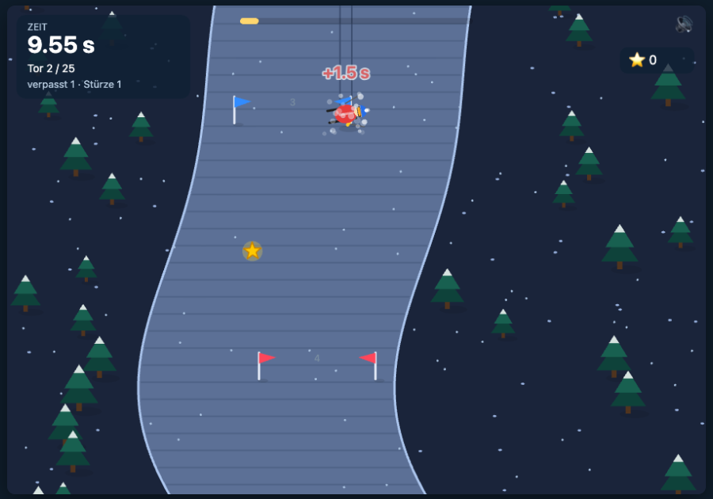
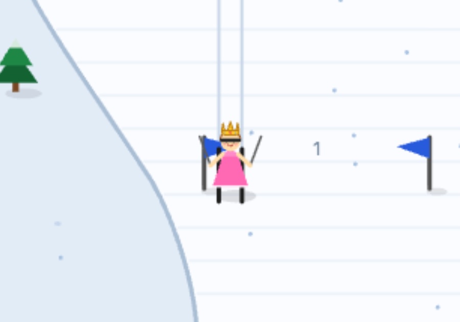

Begleitheft · Teil A für Lehrpersonen
Teilnehmer:innen ab etwa 10 Jahren bauen ein Ski-Spiel, ohne Code zu tippen: Sie sagen der KI, was sie wollen, die KI schreibt den Code, sie prüfen das Ergebnis.
?kurz?langNach jedem Schritt die Rollen wechseln. So kommen alle an die Tastatur und alle lernen das Prüfen.
© 2026 Reto Lenz · Lizenz CC BY-NC 4.0
Teil A für Lehrpersonen
| Kurz (ca. 1½–2 Std.) | Ausführlich (ca. 3 Std.) | Was passiert |
|---|---|---|
| 10 Min. | 15 Min. | Einstieg: Demo zeigen, „So arbeiten wir mit KI“ besprechen, Teams und Rollen. |
| 10 Min. | 15 Min. | Schritt 1 gemeinsam: Basis-Spiel laden, fahren, Datei herunterladen und im Chat hochladen – am Beamer vorzeigen. |
| 35 Min. | 70 Min. | Teil 1: Bauplan, Kamera, Lenkung, eigene Strecke (ausführlich: dazu Tore, Piste und Wald). |
| – | 15 Min. | Pause |
| 30 Min. | 50 Min. | Teil 2 und 3: Extras einschalten, eigene Ideen, freie Idee. |
| 10 Min. | 15 Min. | Abschluss: Spiele gegenseitig ausprobieren, Bestzeiten, Gesprächsrunde. |
Heute baut ihr ein eigenes Ski-Spiel, ohne selbst Code zu tippen. Ihr sagt der KI, was ihr wollt. Die KI schreibt den Code. Und ihr prüft, ob es stimmt.
Die KI ist euer Beifahrer: Sie ist schnell, aber sie kann sich irren. Ihr seid die Chefs – ihr entscheidet und ihr prüft.
Im Chat schreiben wir keine Namen, Adressen, Fotos oder Passwörter.
Teil A für Lehrpersonen
| Das seht ihr | Das hilft |
|---|---|
| Die KI fragt zurück oder schickt keinen Code. | Prompt nochmals ganz kopieren (Knopf „Prompt kopieren“). Sonst nachschieben: „Bitte gib mir die vollständige Datei.“ |
| Der Code hört mittendrin auf. | Der Launcher merkt das. Prompt „↻ Weiter“ schicken, dann „🧩 Fortsetzung anhängen“. |
| Roter Hinweis über dem Spiel. | „Reparatur-Prompt kopieren“, im Chat einfügen, neue Antwort testen. |
| Spiel läuft, aber anders als gewünscht. | Unter „Was hat sich geändert?“ bei „Etwas stimmt nicht?“ beschreiben. Oder „🛟 Genauer Prompt“ schicken. |
| Ein Schritt hat es schlechter gemacht. | „↩ Vorherige Version“. |
| Der Chat wird sehr lang oder langsam. | „💾 Meine Version herunterladen“, neuen Chat öffnen, Datei hochladen, weitermachen. |
| Tageslimit erreicht oder Chat fällt aus. | Version herunterladen und mit einem Ersatz-Konto weiter. Sonst Teams zusammenlegen oder die Demo als Inspiration fahren. |
| Ein Team ist schnell fertig. | Teil 3 „Freie Idee“ mit den Ideen-Knöpfen. Tipp: Die KI zuerst den Prompt prüfen lassen. |
Mehr Hintergrund: README auf github.com/rlen-source/skirennen
Begleitheft · Teil B für die Teams
Ihr beschreibt, die KI programmiert, ihr prüft. Hier steht, was ihr wissen müsst.
Teil B für die Teams

Ihr fahrt ein Rennen und gebt die Datei der KI. Die KI erklärt euch das Spiel – sie ändert noch nichts.
Darauf achten: Merkt euch eure Zeit!

Ihr lasst euch die drei Bereiche zeigen: Mischpult, Bastelecke, Motorraum.
Darauf achten: Wo würdet ihr das Tempo ändern? Wo die Farbe?

Der Skifahrer rückt nach oben oder unten – so seht ihr die Tore früher oder später.
Darauf achten: Nur eine Zahl ändert sich. Wo steht der Skifahrer jetzt?
Rutschig wie auf Eis oder ganz direkt? Dann eine eigene Strecke (Seed) und ein eigener Titel – eure Version 1.
Darauf achten: Fühlt sich das Lenken anders an? Zeigt das Titelbild euren Titel?
Nummern wie in der Kurz-Version. In der ausführlichen Version gibt es zusätzlich Tore, Piste und Wald.
Teil B für die Teams

Schneefall, Publikum, Sterne, Adler und Feuerwerk sind schon fertig – ihr schaltet sie ein.
Darauf achten: Jubelt das Publikum bei jedem Tor? Zählt oben rechts der Sterne-Zähler?

Hütten, Steine, Ziegen oder Iglus neben der Piste. In der Kurz-Version zusammen mit Tempo und Kombo-Serie in einem Prompt.
Darauf achten: Steht die Deko nur neben der Piste? Welcher Satz hat was bewirkt?

Bär, Yeti oder Schneemann kommen von hinten den Hang hinunter.
Darauf achten: Kommt er erst nach ein paar Sekunden? Stürzt ihr, wenn er euch erwischt?

Nacht, Neon, Bonbon oder Retro – nur die Farben ändern sich.
Darauf achten: Sieht man Piste, Tiefschnee und Tore noch gut?

Prinzessin, Ninja, Pinguin oder Roboter statt Skifahrer.
Darauf achten: Steht die Figur auf zwei Skiern? Ist sie etwa gleich gross?
© 2026 Reto Lenz · Lizenz CC BY-NC 4.0 – frei nutzbar und anpassbar mit Namensnennung, nicht kommerziell.
Guide · Part A for teachers
Participants from about 10 years build a ski game without typing code: they tell the AI what they want, the AI writes the code, they check the result.
?short?longSwap roles after every step. That way everyone gets to the keyboard and everyone learns to check.
© 2026 Reto Lenz · Licence CC BY-NC 4.0
Part A for teachers
| Short (about 1½–2 h) | Extended (about 3 h) | What happens |
|---|---|---|
| 10 min | 15 min | Start: show the demo, talk through “How we work with AI”, teams and roles. |
| 10 min | 15 min | Step 1 together: load the base game, ski, download the file and upload it in the chat – show it on the projector. |
| 35 min | 70 min | Part 1: blueprint, camera, steering, own course (extended: plus gates, piste and forest). |
| – | 15 min | Break |
| 30 min | 50 min | Parts 2 and 3: switch on extras, own ideas, free idea. |
| 10 min | 15 min | Wrap-up: try each other's games, best times, discussion. |
Today you'll build your own ski game without typing code yourselves. You tell the AI what you want. The AI writes the code. And you check whether it's right.
The AI is your co-driver: it's fast, but it can be wrong. You are the bosses – you decide and you check.
In the chat we don't write names, addresses, photos or passwords.
Part A for teachers
| What you see | What helps |
|---|---|
| The AI asks back or sends no code. | Copy the whole prompt again (“Copy prompt” button). Otherwise add: “Please give me the complete file.” |
| The code stops halfway. | The launcher notices. Send the “↻ Continue” prompt, then use “🧩 Append continuation”. |
| Red notice above the game. | “Copy repair prompt”, paste it in the chat, test the new answer. |
| The game runs, but not as wanted. | Under “What has changed?” describe it at “Something not right?”. Or send the “🛟 Exact prompt”. |
| A step made it worse. | “↩ Previous version”. |
| The chat gets very long or slow. | “💾 Download my version”, open a new chat, upload the file, carry on. |
| Daily limit reached or chat down. | Download the version and carry on with a spare account. Otherwise merge teams or ski the demo for inspiration. |
| A team finishes early. | Part 3 “Free idea” with the idea buttons. Tip: let the AI check the prompt first. |
More background: README on github.com/rlen-source/skirennen
Guide · Part B for the teams
You describe, the AI programs, you check. Here is what you need to know.
Part B for the teams
You ski a race and give the file to the AI. The AI explains the game to you – it doesn't change anything yet.
Watch out: remember your time!
You let the AI show you the three areas: mixing desk, workshop corner, engine room.
Watch out: where would you change the speed? Where the colour?
The skier moves up or down – so you see the gates earlier or later.
Watch out: only one number changes. Where is the skier now?
Slippery like ice or very direct? Then your own course (seed) and your own title – your version 1.
Watch out: does steering feel different? Does the title screen show your title?
Numbers as in the short version. The extended version also has gates, piste and forest. (Screenshots show the German game.)
Part B for the teams
Snowfall, crowd, stars, eagle and fireworks are already finished – you switch them on.
Watch out: does the crowd cheer at every gate? Does the star counter at the top right count?
Huts, rocks, goats or igloos next to the piste. In the short version together with speed and combo streak in one prompt.
Watch out: is the decoration only next to the piste? Which sentence did what?
A bear, yeti or snowman comes down the slope from behind.
Watch out: does it only come after a few seconds? Do you crash when it catches you?
Night, neon, candy or retro – only the colours change.
Watch out: can you still see piste, deep snow and gates well?
Princess, ninja, penguin or robot instead of the skier.
Watch out: does the figure stand on two skis? Is it about the same size?
© 2026 Reto Lenz · Licence CC BY-NC 4.0 – free to use and adapt with attribution, non-commercial.